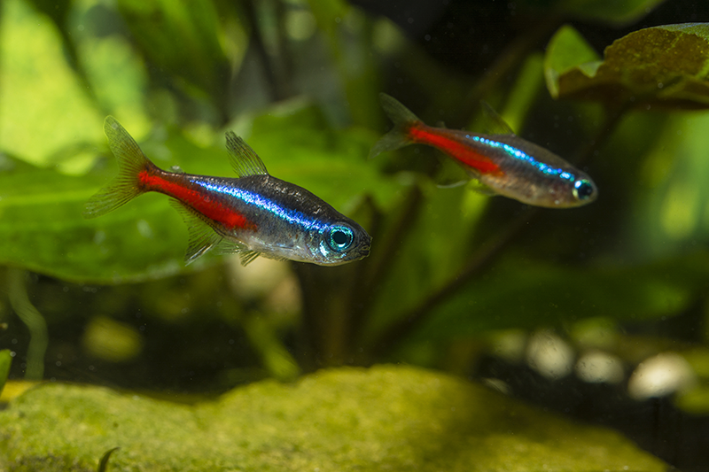
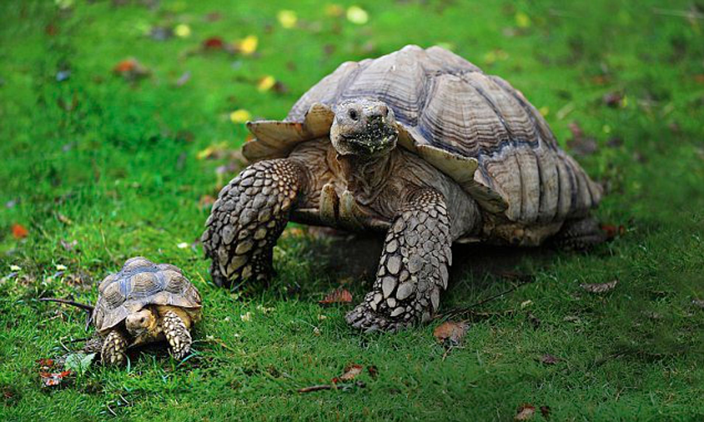

WikiPetia
Welcome to out WikiPetia, click on you favorite animal and we will provide more information about them.
Information About Cats

The cat (Felis catus) is a domestic species of small carnivorous mammal. It is the only domesticated species in the family Felidae and is often referred to as the domestic cat to distinguish it from the wild members of the family. A cat can either be a house cat, a farm cat or a feral cat; the latter ranges freely and avoids human contact. Domestic cats are valued by humans for companionship and their ability to hunt rodents. About 60 cat breeds are recognized by various cat registries. The cat is similar in anatomy to the other felid species: it has a strong flexible body, quick reflexes, sharp teeth and retractable claws adapted to killing small prey. Its night vision and sense of smell are well developed. Cat communication includes vocalizations like meowing, purring, trilling, hissing, growling and grunting as well as cat-specific body language. A predator that is most active at dawn and dusk, the cat is a solitary hunter but a social species. It can hear sounds too faint or too high in frequency for human ears, such as those made by mice and other small mammals. It secretes and perceives pheromones.
Information About Dogs

The dog (Canis familiaris when considered a distinct species or Canis lupus familiaris when considered a subspecies of the wolf) is a domesticated carnivore of the family Canidae. It is part of the wolf-like canids, and is the most widely abundant terrestrial carnivore. The dog and the extant gray wolf are sister taxa as modern wolves are not closely related to the wolves that were first domesticated, which implies that the direct ancestor of the dog is extinct. The dog was the first species to be domesticated, and has been selectively bred over millennia for various behaviors, sensory capabilities, and physical attributes. Their long association with humans has led dogs to be uniquely attuned to human behavior, and they can thrive on a starch-rich diet that would be inadequate for other canids. Dogs vary widely in shape, size, and colors. They perform many roles for humans, such as hunting, herding, pulling loads, protection, assisting police and military, companionship, and, more recently, aiding disabled people, and therapeutic roles. This influence on human society has given them the sobriquet of "man's best friend."
Information About Fishes
Fish are gill-bearing aquatic craniate animals that lack limbs with digits. They form a sister group to the tunicates, together forming the olfactores. Included in this definition are the living hagfish, lampreys, and cartilaginous and bony fish as well as various extinct related groups. The earliest organisms that can be classified as fish were soft-bodied chordates that first appeared during the Cambrian period. Although they lacked a true spine, they possessed notochords which allowed them to be more agile than their invertebrate counterparts. Fish would continue to evolve through the Paleozoic era, diversifying into a wide variety of forms. Many fish of the Paleozoic developed external armor that protected them from predators. The first fish with jaws appeared in the Silurian period, after which many (such as sharks) became formidable marine predators rather than just the prey of arthropods.
Information About Tortoise
Tortoises (/ˈtɔːr.təs.ɪz/) are reptile species of the family Testudinidae of the order Testudines (the turtles). They are particularly distinguished from other turtles by being land-dwelling, while many (though not all) other turtle species are at least partly aquatic. Like other turtles, tortoises have a shell to protect from predation and other threats. The shell in tortoises is generally hard, and like other members of the suborder Cryptodira, they retract their necks and heads directly backwards into the shell to protect them. Tortoises are unique among vertebrates in that the pectoral and pelvic girdles are inside the ribcage rather than outside. Tortoises can vary in dimension from a few centimeters to two meters. They are usually diurnal animals with tendencies to be crepuscular depending on the ambient temperatures. They are generally reclusive animals. Tortoises are the longest-living land animals in the world, although the longest-living species of tortoise is a matter of debate. Galápagos tortoises are noted to live over 150 years, but an Aldabra giant tortoise named Adwaita may have lived an estimated 255 years. In general, most tortoise species can live 80–150 years.